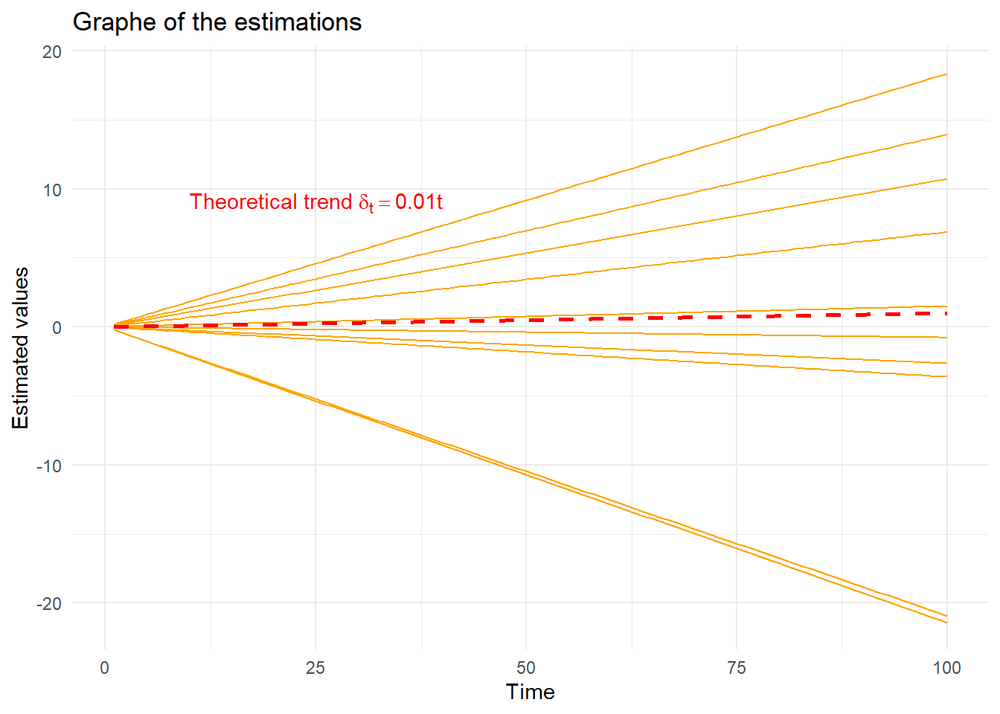
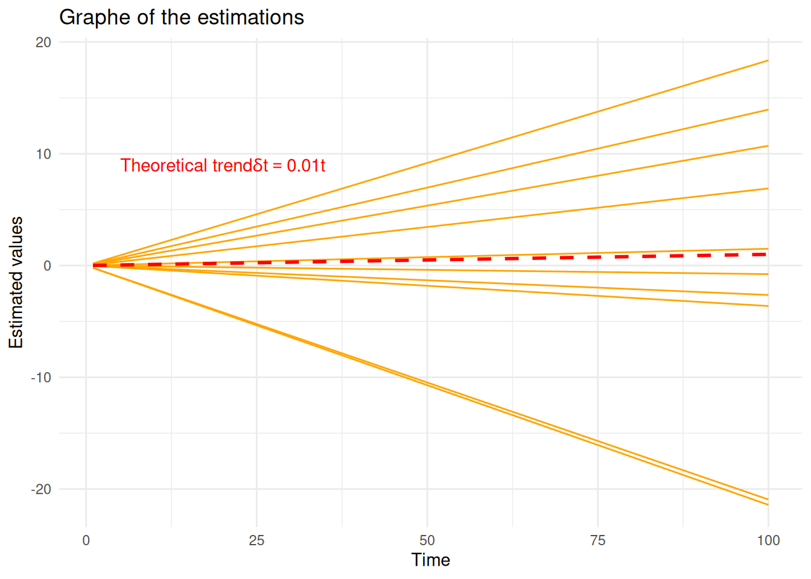

Show the code
# Données
library(dplyr) # manipulation des données
library(latex2exp)
# Plots
## ggplot
library(ggplot2)
library(gridExtra)# Données
library(dplyr) # manipulation des données
library(latex2exp)
# Plots
## ggplot
library(ggplot2)
library(gridExtra)random_walk <- function(n, delta) {
w <- rnorm(n)
drift <- delta * seq(1, n)
x <- drift + cumsum(w)
return(x)
}noisy_serie <- function(n, delta) {
w <- rnorm(n, sd = 1)
drift <- delta * seq(1, n)
x <- drift + w
return(x)
}plot_simulation_time_series <- function(data, main_title, y_lab) {
plot_data <- data.frame(
Time = rep(1:n, I),
Value = as.vector(data),
Group = rep(1:I, each = n)
)
ggplot(plot_data, aes(
x = Time,
y = Value,
group = Group,
color = factor(Group)
)) +
geom_line() +
scale_color_viridis_d(name = "Time séries") +
labs(title = main_title,
x = "Time",
y = y_lab) +
theme_minimal() +
theme(legend.title = element_text(size = 18),
legend.text = element_text(size = 12),
axis.title = element_text(size = 16),
axis.text = element_text(size = 14),
plot.title = element_text(size = 18, face = "bold"))
}set.seed(140400)Pour cette exercice, nous allons étudier deux types de séries temporelles : les marches aléatoires et les signaux linéaires bruités.
Pour cela nous allons simuler :
dix marches aléatoires \((x_t)_t\) avec dérive de longueur \(n=100\), de paramètre \(\delta=.01\) et de variance \(\sigma_W^2=1\) pour le bruit.
dix séries \((x_t)_t\) de la forme \(x_t = \delta_t + w_t\) (tendance+bruit blanc) de longueur \(n = 100\), de paramètre \(\delta = .01\) et de variance \(\sigma^2_W = 1\)
Si on pose que \(x_0 = w_0\), on peut écrire notre marche aléatoire comme \(x_t = \delta t + \sum_{i=0}^{t}w_i\)
n <- 100 ## length
delta <- .01 ## drift parameter
I <- 10 ## number of seriessim <- t(simplify2array(lapply(1:I, function(i) random_walk(n, delta))))plot_simulation_time_series(sim, main_title = TeX(paste("Simulation of", I, "Random Walks with drift $\\delta$ =", delta)), y_lab = "Random Walk")
sim2 <- t(simplify2array(lapply(1:I, function(i) noisy_serie(n, delta))))plot_simulation_time_series(sim2, main_title = paste("Simulation of", I, "linear noisy series"), y_lab = "Noisy serie")
sim_coeff <- apply(sim, 1, function(x) {
mod <- lm(x ~ 0 + seq(1, n)) # Régression sans intercept
return(mod$coefficients) # Retourner le coefficient de la régression
})sim2_coeff <- apply(sim2, 1, function(x) {
mod <- lm(x ~ 0 + seq(1, n)) # Régression sans intercept
return(mod$coefficients) # Retourner le coefficient de la régression
})Avec ces résulats, nous pouvons par la suite représenter sur un même graphique les dix droites estimées et la tendance moyenne théorique \(\delta_t=.01t\).
time <- seq(1, n)
# Créer un data.frame pour les courbes simulées
sim_data <- data.frame(
time = rep(time, I),
value = unlist(lapply(1:I, function(i) sim_coeff[i] * time)),
group = rep(1:I, each = n)
)
# Créer la ligne théorique
theoretical_trend <- data.frame(
time = time,
value = 0.01 * time,
group = "Theoretical Trend"
)
# Plot avec ggplot
library(ggplot2)
ggplot(sim_data, aes(x = time, y = value, group = group, color = factor(group))) +
geom_line(size = .5, color = "orange") + # Courbes simulées
geom_line(data = theoretical_trend, aes(x = time, y = value), color = "red", linetype = "dashed", size = 1.) + # Ligne théorique
labs(
title = "Graphe of the estimations",
x = "Time",
y = "Estimated values",
color = "Simulated Curves"
) +
scale_color_manual(values = rep("orange", I)) + # Couleur orange pour toutes les courbes simulées
theme_minimal() +
theme(legend.position = "topleft") +
annotate("text", x = 10, y = 9, label = TeX("Theoretical trend $\\delta_t = 0.01t$"), color = "red", hjust = 0)Warning: Using `size` aesthetic for lines was deprecated in ggplot2 3.4.0.
ℹ Please use `linewidth` instead.Warning in is.na(x): is.na() appliqué à un objet de type 'expression' qui n'est
ni une liste, ni un vecteur
Résultats
METTRE LES CONCLUSIONS
time <- seq(1, n)
# Créer un data.frame pour les courbes simulées
sim_data <- data.frame(
time = rep(time, I),
value = unlist(lapply(1:I, function(i) sim2_coeff[i] * time)),
group = rep(1:I, each = n)
)
# Créer la ligne théorique
theoretical_trend <- data.frame(
time = time,
value = 0.01 * time,
group = "Theoretical Trend"
)
ggplot(sim_data, aes(x = time, y = value, group = group, color = factor(group))) +
geom_line(size = .5, color = "orange") + # Courbes simulées
geom_line(data = theoretical_trend, aes(x = time, y = value), color = "red", linetype = "dashed", size = 1.) + # Ligne théorique
labs(
title = "Graphe of the estimations",
x = "Time",
y = "Estimated values",
color = "Simulated Curves"
) +
scale_color_manual(values = rep("orange", I)) + # Couleur orange pour toutes les courbes simulées
theme_minimal() +
theme(legend.position = "topleft") +
annotate("text", x = 10, y = 9, label = TeX("Theoretical trend $\\delta_t = 0.01t$"), color = "red", hjust = 0)Warning in is.na(x): is.na() appliqué à un objet de type 'expression' qui n'est
ni une liste, ni un vecteur
Résultats
METTRE LES CONCLUSIONS
Nos avonc pu observé que blablabla
sessioninfo::session_info(pkgs = "attached")─ Session info ───────────────────────────────────────────────────────────────
setting value
version R version 4.4.2 (2024-10-31)
os Ubuntu 24.04.1 LTS
system x86_64, linux-gnu
ui X11
language (EN)
collate fr_FR.UTF-8
ctype fr_FR.UTF-8
tz Europe/Paris
date 2025-02-28
pandoc 3.2 @ /usr/lib/rstudio/resources/app/bin/quarto/bin/tools/x86_64/ (via rmarkdown)
─ Packages ───────────────────────────────────────────────────────────────────
package * version date (UTC) lib source
dplyr * 1.1.4 2023-11-17 [1] CRAN (R 4.4.2)
ggplot2 * 3.5.1 2024-04-23 [1] CRAN (R 4.4.2)
gridExtra * 2.3 2017-09-09 [1] CRAN (R 4.4.2)
latex2exp * 0.9.6 2022-11-28 [1] CRAN (R 4.4.2)
[1] /home/clement/R/x86_64-pc-linux-gnu-library/4.4
[2] /usr/local/lib/R/site-library
[3] /usr/lib/R/site-library
[4] /usr/lib/R/library
──────────────────────────────────────────────────────────────────────────────